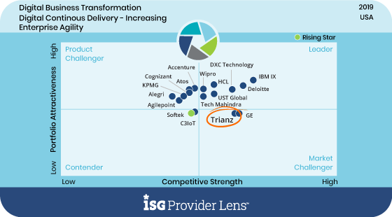

Application Modernization Services
Relieve IT of tech debt to provide the user experiences and functionality your business needs, with an architecture you can afford into the future.

Recognized as a ‘Market Challenger’ in the Digital Transformation Space by ISG

Recognized for best-in-class Advisory Excellence and Strong Digital Capabilities